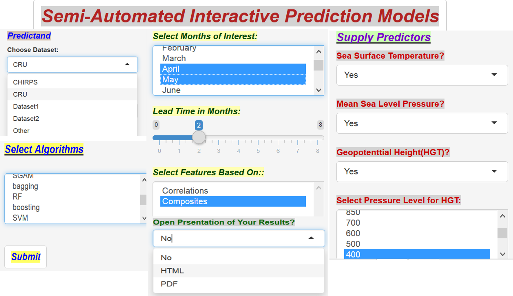

Semi-Automated Prediction for Any Geographic Location Using Shiny

The Madden-Julian Oscillation, wave dynamics and convection over West Africa
95th AMS Annual Meeting
Berhane et al. 2015
Impacts of the Madden-Julian Oscillation over East Africa (EA)

Berhane and Zaitchik, 2014
Sub-seasonal analysis of rainfall over the Blue Nile River basin

Correlations of Blue Nile June precipitation with geopotential height at various pressure levels
Berhane et al. 2014
Model based assessment of potential impacts of climate change on the flow of the main headwaters of the Nile River: Equatorial Lakes Region and Blue Nile Basins